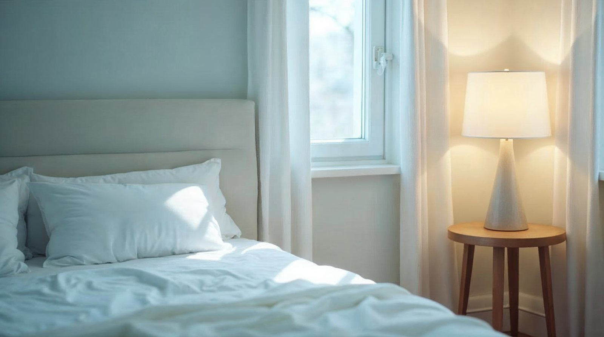
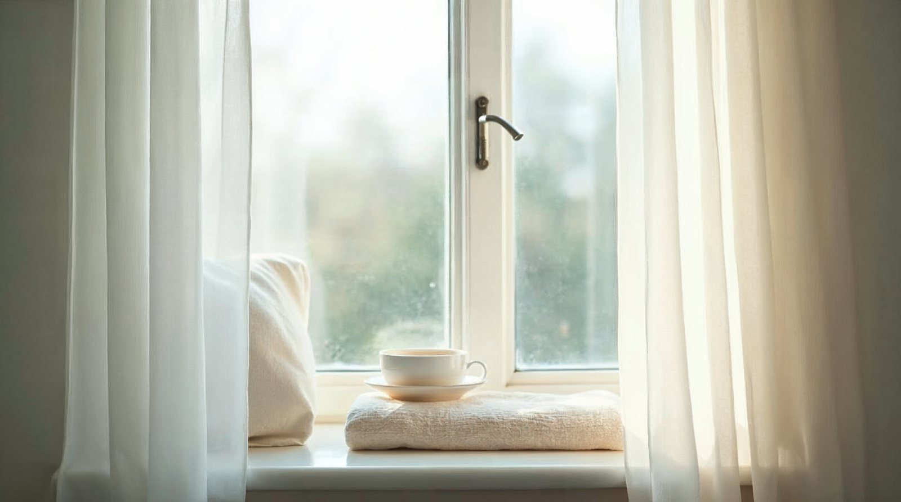

이종호 한의사 감수좋은꿈참사랑한의원 대표원장 (한의사 면허번호 19769)발행 2026-11-26 · 수정 2026-11-26
이 글의 차례
밤에 누우면 꼭 한쪽 콧구멍이 막혀서 몸을 반대로 돌려 눕게 됩니다. 낮에도 손가락으로 한쪽 코를 막아 보면 다른 쪽은 시원한데 이쪽은 숨이 잘 안 들어갑니다. 어릴 때부터 그랬던 것 같기도 하고, 요즘 들어 더 심해진 것 같기도 합니다.
진료실에서 "한쪽 코만 늘 막혀요"라는 말씀을 들으면 저는 먼저 그 쪽이 늘 같은 쪽인지, 아니면 좌우가 번갈아 막히는지를 여쭙니다. 이 질문 하나로 코막힘의 성격이 꽤 많이 나뉘기 때문입니다.
코 안은 가운데 칸막이로 좌우가 나뉘어 있습니다. 이 칸막이를 비중격이라고 하는데, 이것이 한쪽으로 휘어 있으면 그쪽 통로가 좁아집니다. 여기에 코 안쪽 점막이 붓는 비염이나 비갑개 부종이 겹치면 막힘이 더 심해집니다.
이 글에서는 비중격만곡과 비염의 차이, 한쪽 코막힘이 잠과 생활에 주는 영향, 집에서 해 볼 수 있는 관리와 한의원에서 함께 살피는 부분을 차례로 정리했습니다.
비중격만곡은 어떤 상태인가요
비중격은 연골과 얇은 뼈로 이루어진 칸막이입니다. 사실 완전히 반듯한 비중격을 가진 사람은 드뭅니다. 대부분은 조금씩 휘어 있고, 그 정도가 크지 않으면 평생 불편 없이 지냅니다.
휘어진 정도가 크거나 휜 자리가 숨이 지나가는 좁은 길목에 있으면 그쪽 코로 공기가 잘 들어가지 않습니다. 자라면서 자연스럽게 휘기도 하고, 어릴 때나 운동하다가 코를 부딪힌 일이 계기가 되기도 합니다.
비중격만곡으로 인한 코막힘은 대개 늘 같은 쪽이 막힌다는 특징이 있습니다. 감기가 지나가도, 계절이 바뀌어도 막히는 쪽이 바뀌지 않는다면 구조적인 원인을 먼저 생각해 볼 수 있습니다.
비염과 비갑개 부종은 무엇이 다른가요
코 안 옆벽에는 비갑개라는 선반 모양의 구조가 있고, 그 위를 혈관이 많은 점막이 덮고 있습니다. 이 점막은 공기를 데우고 적셔 주는 일을 하는데, 알레르기나 찬 공기, 먼지 같은 자극을 받으면 쉽게 붓습니다.
비염으로 점막이 부으면 코막힘과 함께 맑은 콧물, 재채기, 코 가려움이 오는 경우가 많습니다. 아침에 일어났을 때, 찬 공기를 마셨을 때, 먼지가 많은 곳에서 심해지고 하루 중에도 오르내립니다.
점막 붓기는 좌우가 번갈아 막히는 모양을 자주 보입니다. 사실 건강한 코도 몇 시간마다 좌우 점막이 번갈아 조금씩 부었다 가라앉습니다. 평소에는 느끼지 못하다가 점막이 예민해지면 이 교대가 막힘으로 느껴집니다.
왜 한쪽 코만 막히는 걸까요
늘 같은 쪽만 막힌다면 휘어진 비중격 때문에 그쪽 통로가 원래 좁은 경우가 많습니다. 반대로 휘어진 쪽의 맞은편은 공간이 넓어지면서 그쪽 비갑개가 빈자리를 채우듯 커지기도 해서, 양쪽이 다 답답하게 느껴지는 분도 계십니다.
좁은 쪽 통로는 작은 붓기에도 쉽게 막힙니다. 그래서 평소에는 견딜 만하다가 감기에 걸리거나 비염이 심해지는 계절, 술을 마신 날, 건조한 겨울에 막힘이 확 심해지는 경험을 하시게 됩니다. 구조와 점막 붓기가 겹쳐 생기는 일입니다.
누운 자세도 영향을 줍니다. 옆으로 누우면 아래쪽 코의 점막으로 피가 몰려 그쪽이 더 막힙니다. 원래 좁은 쪽이 아래로 가면 막힘이 심해지니 자꾸 몸을 돌리게 되는 것입니다.
한의학에서는 코를 폐와 연결된 숨의 문으로 보고, 찬 기운이나 열이 머물러 코가 막히는 모습을 함께 살핍니다. 구조는 바꿀 수 없더라도, 점막을 붓게 하는 몸의 흐름은 생활과 진료로 함께 다듬어 볼 수 있습니다.

한쪽 코막힘이 생활에 주는 영향
코가 막히면 자연스럽게 입으로 숨을 쉬게 됩니다. 밤새 입으로 숨을 쉬면 아침에 입과 목이 바짝 마르고 목이 칼칼해집니다. 코골이가 생기거나 심해지고, 잠이 얕아져 낮에 피곤하기 쉽습니다.
코로 들어오는 공기는 코 안에서 데워지고 적셔지고 걸러집니다. 입으로 숨을 쉬면 이 과정이 빠져 찬 공기와 먼지가 목과 기관지로 바로 들어가 목감기나 기침이 잦아지기도 합니다.
한쪽 코막힘이 오래가면 그쪽 부비동의 환기가 잘 되지 않아 부비동염이 반복되는 분도 계십니다. 코막힘과 함께 누런 콧물, 얼굴 눌린 느낌, 냄새를 잘 못 맡는 일이 자주 온다면 이비인후과에서 함께 확인해 보시는 것이 좋습니다.
계절에 따라 막힘이 달라지는 이유
가을과 겨울에는 찬 공기와 난방으로 코 점막이 마르고 예민해집니다. 마른 점막은 작은 자극에도 쉽게 붓고, 원래 좁은 쪽 통로는 이 붓기를 버티지 못해 막힘이 심해집니다. 겨울마다 코막힘이 심해진다고 말씀하시는 분이 많은 이유입니다.
봄에는 꽃가루와 황사, 미세먼지가 점막을 자극합니다. 알레르기 비염이 함께 있는 분은 이 시기에 재채기와 맑은 콧물이 늘면서 한쪽 막힘이 양쪽 막힘으로 번지기도 합니다. 외출 뒤 세수와 코 세척으로 묻은 자극을 덜어 주시면 좋습니다.
여름에는 에어컨의 찬 바람과 실내외 온도 차가 점막을 흔듭니다. 에어컨 바람이 얼굴로 바로 오지 않게 방향을 돌리고, 실내 온도를 바깥과 너무 크게 차이 나지 않게 맞춰 보세요.
아이와 어른의 한쪽 코막힘은 조금 다르게 봅니다
아이가 한쪽 코만 막히고 그쪽에서 냄새 나는 콧물이 계속 나온다면, 작은 장난감이나 음식 조각 같은 이물이 들어가 있을 수 있습니다. 이런 경우에는 집에서 꺼내려 하지 말고 이비인후과에서 확인해 주세요.
어른은 오래된 비중격만곡이나 비염이 흔하지만, 전에 없던 한쪽 막힘이 새로 생겨 점점 심해진다면 코 안에 물혹 같은 다른 원인이 있는지 한 번은 확인해 두시는 것이 좋습니다. 새로 생긴 변화는 기록해 두었다가 진료 때 알려 주세요.
코막힘과 함께 오는 몸의 불편
코가 오래 막혀 있으면 머리가 무겁고 집중이 잘 되지 않는다고 말씀하시는 분이 많습니다. 밤사이 숨이 얕아 잠의 질이 떨어지고, 낮에도 입으로 숨을 쉬며 지내다 보니 쉽게 피곤해지기 때문입니다.
입 호흡이 습관이 되면 입술과 입안이 마르고, 입냄새가 신경 쓰이기도 합니다. 목이 자주 칼칼하고 감기에 잘 걸린다는 분도 코 상태부터 다시 살펴보면 연결이 보이는 경우가 있습니다.
코가 막힌 쪽 얼굴과 목, 어깨에 긴장이 쌓여 있는 분도 자주 봅니다. 답답한 쪽으로 고개를 기울이거나 턱을 내미는 자세가 굳어진 탓입니다. 그래서 진료실에서는 코만 보지 않고 목과 어깨도 함께 만져 봅니다.
코막힘 스프레이, 계속 써도 되나요?
약국에서 사는 코막힘 스프레이 가운데 혈관을 좁혀 붓기를 빠르게 가라앉히는 종류가 있습니다. 뿌리면 금방 시원해지지만, 며칠 넘게 계속 쓰면 약효가 떨어질 때 점막이 더 심하게 붓는 반동이 생길 수 있습니다.
이 반동 때문에 스프레이 없이는 숨을 쉬기 어려워져 하루에도 여러 번 뿌리게 되는 분이 계십니다. 이런 상태라면 혼자 갑자기 끊기보다 이비인후과에서 상의해 다른 방법으로 천천히 바꾸시는 편이 좋습니다.
병원에서 처방받은 스테로이드 스프레이나 알레르기 약은 처방한 선생님의 안내대로 쓰시면 됩니다. 어떤 스프레이를 쓰고 계신지 진료실에 알려 주시면 함께 살필 때 참고합니다.
수술이 필요한지는 어떻게 정하나요
비중격이 휘어 있다고 모두 수술하는 것은 아닙니다. 막힘이 생활과 잠을 얼마나 방해하는지, 약과 관리로 얼마나 견딜 만해지는지, 부비동염이나 코골이가 반복되는지를 함께 보고 이비인후과에서 판단합니다.
수술을 고민하고 계시다면 내시경과 CT로 휘어진 정도와 자리를 확인하고, 비갑개나 부비동 문제가 함께 있는지도 살펴 결정하시게 됩니다. 한의원에서는 그 결정을 대신하지 않고, 결정 전후의 코와 몸 상태를 함께 살핍니다.
먼저 이렇게 여쭙니다
처음 오시면 대략 이런 순서로 여쭙니다. 미리 떠올려 오시면 이야기가 훨씬 수월합니다.
- 막히는 쪽은 늘 같은 쪽인가요, 번갈아 막히나요?
- 언제부터 막혔고, 코를 다친 적이 있나요?
- 맑은 콧물, 재채기, 코 가려움이 함께 있나요?
- 밤에 코를 골거나 입으로 숨 쉰다는 말을 들으시나요?
- 코막힘 스프레이나 약은 무엇을, 얼마나 자주 쓰시나요?
- 이비인후과에서 받은 검사 결과가 있나요?
막힘이 심해지는 계절이나 장소, 예를 들어 겨울 난방, 먼지가 많은 작업장, 반려동물과 함께 있는 방 같은 단서도 함께 여쭙니다. 이런 단서가 점막 붓기를 줄이는 생활 관리의 출발점이 됩니다.
일상에서 먼저 해 볼 수 있는 것
구조는 생활로 바꿀 수 없지만, 그 위에 겹친 점막 붓기는 생활 습관으로 덜어 볼 수 있습니다.
- 생리식염수로 코 세척하기(미지근한 물, 세척 도구는 자주 씻기)
- 방 안 습도를 40~60%로 맞추기
- 잠자리 머리 쪽을 조금 높이기
- 막히는 쪽이 위로 오도록 옆으로 누워 보기
- 잠들기 전 술과 늦은 식사 줄이기
- 침구를 자주 털고 햇볕에 말리기, 먼지 줄이기
코 세척을 할 때는 고개를 앞으로 살짝 숙이고 입을 벌려 숨을 쉬며 천천히 흘려보냅니다. 세척 뒤 코를 세게 풀면 귀가 먹먹해질 수 있으니 한쪽씩 살살 푸시는 것이 좋습니다.
따뜻한 수건을 코와 광대뼈 위에 몇 분 올려 두면 점막이 조금 가라앉으며 숨이 편해지는 분이 많습니다. 아침에 막힘이 심하다면 일어나서 따뜻한 물로 세수를 하며 김을 쐬는 것도 도움이 됩니다.
가볍게 걷거나 몸을 움직이면 코 점막의 혈관이 줄어 코가 시원해지는 경우가 많습니다. 아침에 막혔던 코가 출근길을 걷고 나면 풀리는 경험을 하신 분이 많을 것입니다. 하루 20~30분 가벼운 걷기를 생활에 넣어 보시는 것도 코를 돌보는 한 방법입니다.
한의원에서 함께 살필 수 있는 경우
- 구조 문제가 있다고 들었지만 수술 없이 지내 보고 싶은 경우
- 비염이 겹쳐 계절마다 막힘이 심해지는 경우
- 코막힘으로 잠이 얕고 아침에 머리가 무거운 경우
- 수술 뒤에도 점막 붓기와 건조함이 남는 경우
좋은꿈참사랑한의원에서는 먼저 아래 '먼저 확인이 필요한' 신호가 없는지부터 봅니다. 그다음 맥과 혀, 코 주변의 열감과 냉기, 목과 어깨의 긴장, 소화와 잠의 흐름을 함께 살펴 점막을 붓게 하는 몸의 바탕을 정리합니다.
진찰한 내용을 바탕으로 생활에서 바꿔 볼 것 하나와 함께 침, 코와 얼굴 주변을 따뜻하게 하는 관리, 한약 상담 가운데 지금 상태에 맞는 것을 정합니다. 한약을 상의할 때는 드시는 약과 쓰시는 스프레이를 모두 확인하고 신중히 정합니다.
이비인후과에서 처방받은 약은 처방대로 이어 가시고, 수술 여부는 이비인후과 선생님과 상의해 정하세요. 한의원 진료는 그 치료와 나란히 코와 몸의 흐름을 함께 살피는 자리입니다.
이렇게 기록해 오시면 상담이 쉬워집니다
코막힘은 하루와 계절에 따라 오르내림이 커서 기록이 큰 도움이 됩니다. 2주 정도만 적어 보세요.
- 막힌 쪽(왼쪽, 오른쪽, 양쪽)과 시간대
- 콧물 색과 재채기 횟수
- 밤에 깬 횟수와 아침 입 마름 정도
- 스프레이나 약을 쓴 시각과 횟수
- 술, 늦은 식사, 난방이 셌던 날
이 기록을 보면 '늘 같은 쪽인지, 생활에 따라 오르내리는지'가 드러납니다. 그 차이가 구조와 점막 가운데 어디에 더 무게를 두고 살필지 정하는 기준이 됩니다.

구조는 그대로여도 숨은 편해질 수 있습니다
비중격이 휘어 있다는 말을 들으면 수술 말고는 방법이 없다고 생각하시기 쉽습니다. 하지만 막힘의 상당 부분이 그 위에 겹친 점막 붓기에서 오는 경우가 많고, 그 부분은 생활과 진료로 함께 다듬어 볼 여지가 있습니다. 구조와 붓기를 나눠 보는 것만으로도 무엇을 해 볼 수 있는지가 훨씬 또렷해집니다.
이번 주에는 잠자리 습도와 머리 높이 두 가지만 맞춰 보세요. 다음에 오시면 막힌 쪽과 밤에 깬 횟수 기록부터 함께 펼쳐 보겠습니다. 숨이 조금 편해진 밤이 하루 이틀 늘어 가는 것, 그 작은 변화부터 함께 확인하고 다음 걸음을 정하겠습니다.
이런 증상은 먼저 확인이 필요합니다
- 한쪽 코막힘과 함께 피 섞인 콧물이 반복되거나 얼굴이 붓고 감각이 둔해지는 경우
- 코를 부딪친 뒤 코 모양이 변하고 심한 통증이 있거나 눈 주위가 붓고 시야가 흐려지는 경우
이런 신호가 있으면 한의원보다 가까운 병원이나 응급실을 먼저 찾으세요.
함께 읽으면 좋은 글
- 코막힘과 누런 콧물이 오래가는 만성 부비동염(축농증)은 어떻게 살피나요?
- 콧물이 목 뒤로 넘어가 자꾸 헛기침이 나는 후비루는 왜 생기고 어떻게 살피나요?
- 코를 크게 골고 자다가 숨이 멎는 것 같을 때는 어떻게 하나요?
- 냄새를 잘 못 맡고 음식 맛까지 밍밍해진 후각 저하는 어떻게 살피나요?
- 아이가 아침마다 재채기와 맑은 콧물, 코막힘을 달고 사는 알레르기 비염은 어떻게 살피나요?
여쭙는 것
- 막히는 쪽은 늘 같은 쪽인가요, 번갈아 막히나요?
- 언제부터 막혔고, 코를 다친 적이 있나요?
- 맑은 콧물, 재채기, 코 가려움이 함께 있나요?
생활에서 해 볼 것
- 생리식염수로 코 세척하기(미지근한 물, 세척 도구는 자주 씻기)
- 방 안 습도를 40~60%로 맞추기
- 잠자리 머리 쪽을 조금 높이기
한의원에서 함께 살필 것
- 구조 문제가 있다고 들었지만 수술 없이 지내 보고 싶은 경우
- 비염이 겹쳐 계절마다 막힘이 심해지는 경우
- 코막힘으로 잠이 얕고 아침에 머리가 무거운 경우
먼저 확인이 필요한 신호
- 한쪽 코막힘과 함께 피 섞인 콧물이 반복되거나 얼굴이 붓고 감각이 둔해지는 경우
- 코를 부딪친 뒤 코 모양이 변하고 심한 통증이 있거나 눈 주위가 붓고 시야가 흐려지…
한눈에 보는 표
| 구분 | 핵심 |
|---|---|
| 여쭙는 것 | 막히는 쪽은 늘 같은 쪽인가요, 번갈아 막히나요? 언제부터 막혔고, 코를 다친 적이 있나요? |
| 생활에서 해 볼 것 | 생리식염수로 코 세척하기(미지근한 물, 세척 도구는 자주 씻기) 방 안 습도를 40~60%로 맞추기 |
| 한의원에서 함께 살필 것 | 구조 문제가 있다고 들었지만 수술 없이 지내 보고 싶은 경우 비염이 겹쳐 계절마다 막힘이 심해지는 경우 |
| 먼저 확인이 필요한 신호 | 한쪽 코막힘과 함께 피 섞인 콧물이 반복되거나 얼굴이 붓고 감각이 둔해지는 경우 코를 부딪친 뒤 코 모양이 변하고 심한 통증이 있거나 눈 주위가 붓고 시야가 흐려지는 경우 |
자주 묻는 질문
비중격이 휘어 있으면 꼭 수술해야 하나요?
휘어 있어도 불편이 크지 않으면 수술 없이 지내는 분이 많습니다. 막힘이 잠과 생활을 얼마나 방해하는지 보고 이비인후과에서 함께 정합니다.
좌우가 번갈아 막히는 것은 비중격만곡인가요?
번갈아 막히는 모양은 점막 붓기에서 오는 경우가 많습니다. 늘 같은 쪽만 막힌다면 구조적인 원인을 함께 생각해 볼 수 있습니다.
코 세척은 매일 해도 되나요?
생리식염수로 부드럽게 하면 매일 하셔도 됩니다. 수돗물을 그대로 쓰지 말고, 세척 도구는 쓰고 나서 잘 씻어 말려 주세요.
코막힘 스프레이를 오래 썼는데 어떻게 끊나요?
혈관을 좁히는 스프레이를 오래 쓰셨다면 갑자기 끊기보다 이비인후과에서 상의해 천천히 바꾸시는 편이 좋습니다.
수술한 뒤에도 한의원 진료를 받을 수 있나요?
수술한 병원에서 안내한 회복 기간과 주의 사항을 먼저 따르시고, 그 뒤 점막 건조함이나 붓기가 남는다면 함께 살필 수 있습니다.
좋은꿈참사랑한의원은 재진 때 지난번 이야기부터 이어서 여쭙니다. 진료시간과 예약은 오시는 길에서 확인하세요.
어디서 상담받을 수 있나요?
좋은꿈참사랑한의원은 서울 동작구 만양로2길 2 신성빌딩 3층·5층(서울 동작구 상도동, 7호선 상도역 3번 출구 근처)에 있습니다. 한의사 3명(이종호 대표원장, 조영기 수석진료원장, 정원영 진료원장)이 진료합니다. 진료시간은 평일 09:30~20:00(점심 13:00~14:00), 토·일·공휴일 09:30~15:00이며, 방문 전 전화로 확인을 권합니다. 예약은 네이버 예약, 카카오톡 상담, 전화 02-815-7510로 받습니다.
이 글은 일반적인 건강 정보이며 개인의 진단이나 치료를 대신하지 않습니다. 증상이 있거나 복용 중인 약이 있다면 진료를 통해 확인하세요. 치료 효과는 개인마다 다를 수 있습니다.
작성 기준: 일반적으로 알려져 있는 건강 정보를 참고해 정리했습니다(대표원장 감수). 증상 기록은 1~2주 동안 하루 1회, 비슷한 시간에 적어 오시면 지난 상태와 비교하기 쉽습니다.